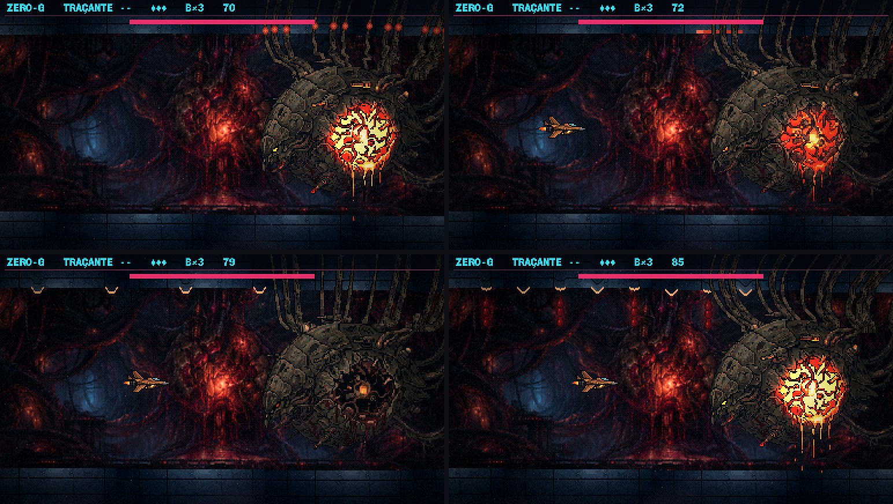
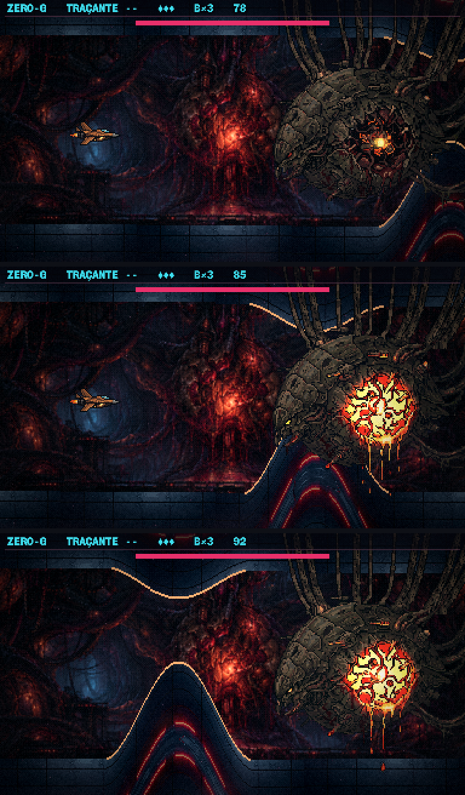
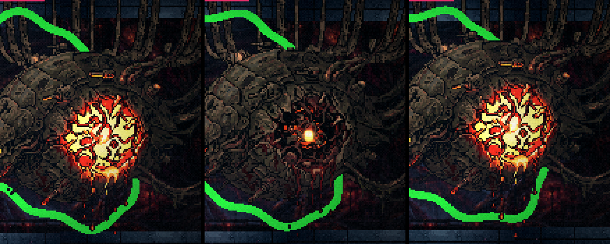
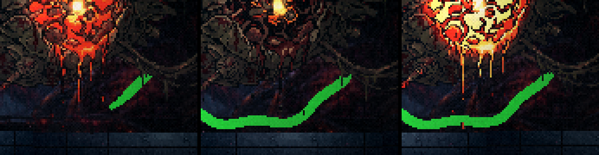
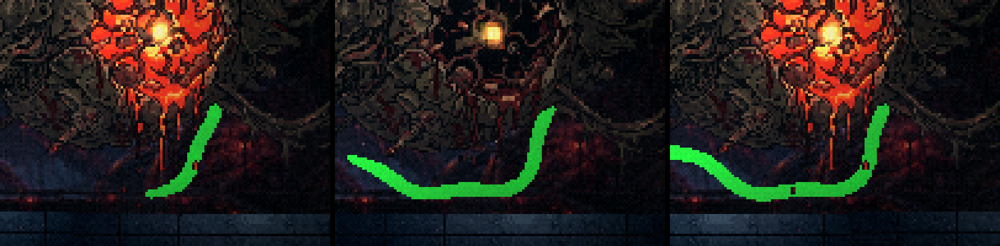
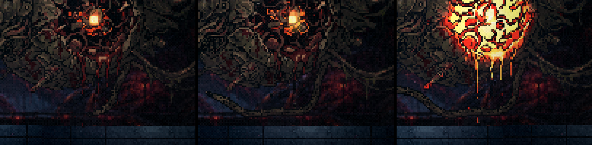

Passo 5, rodada 1: o teto que sangra (23/11)
O passo 4 fechou ("aprovado") e está commitado. O que entrou (a spec §7): aos 33–0 %, depois da
serra, ele bombeia pelos cabos. Um pulso aceso sobe por eles até o teto e corre a borda de cima, da direita para a
esquerda. Depois, 4 pontos da borda (nos 2/3 da esquerda) incham e acendem por 0,8 s, e de cada um pende uma
gota que estica antes de soltar. Cada ponto solta uma coluna reta de 3 gotas grossas que caem com a gravidade,
sem arco. A 2ª onda, 0,7 s depois, cai nos vãos da 1ª. Na borda de baixo a gota respinga e segue, porque a
parede não protege (a regra da lava). Cada gota tira 1 vida.
- O sangue: desenhado em pixel, vermelho mais escuro que a lava do miolo, com um brilho carmim fraco (a lava é
laranja forte). Sem o brilho, a gota sumia no vermelho do fundo no meio da tela.
- A borda viva de novo: os pontos incham na mesma camada do aperto e levam o fio aceso, então mordem: quem
se esconde na faixa do teto, em cima deles, não fica de fora. O pulso que corre a borda é outra luz (vermelha,
mais grossa) e não morde.
- O rodízio dos 33–0 %: investida → serpentes → aperto → serra → teto que sangra, como na spec §8. Na
estação, miolo aberto, sem salva.
Os quatro momentos

O pulso sobe pelos cabos; corre a borda de cima; os pontos incham com a gota pendurada; as colunas caem.
Em jogo: lendo e parada

Em cima a nave lê: fica no vão da 1ª onda enquanto ela cai e, quando a última gota passa da altura dela, vai
para a coluna velha (a 2ª cai nos vãos). 0 vidas. Embaixo ela fica parada debaixo de uma coluna da 1ª onda:
1 vida.
Medido (test-guardiao-teto.mjs e test-guardiao-teto-jogo.mjs): 24 gotas em 8 colunas
alternadas a 32 px, cada uma reta e acelerando; dentro de uma onda, o vão entre colunas cabe a nave com 36 px de folga; da
altura 60 para baixo, a troca de coluna tem uma janela de 0,35 s (a nave anda os 32 px em 0,29 s); a parada perde 1 vida,
a que lê 0, a escondida na faixa do teto é mordida; ele não sai da estação e o miolo toma dano. A ação dura ~3,5 s.
As perguntas (decisões minhas):
- A figura: 4 pontos por onda, a cada 64 px (a 1ª em 32…224, a 2ª em 64…256), sempre os mesmos, como os pulsos.
Fica, ou quer 5–6 pontos (mais apertado)?
- A troca é justa mas exige reflexo: 0,35 s de janela para andar 32 px. Acima de y 60 (logo abaixo dos pontos) é
mais apertado; ali a gota ainda está lenta. Quer mais folga (2 gotas por coluna, ou a 2ª onda mais tarde)?
- A cor: o sangue escuro com o brilho carmim fraco. Mais aceso, ou assim?
Passo 4, rodada 2: a borda torcida morde, e o fio é o hitbox (23/11)
As suas respostas: a alternância alto/baixo fica; o anel inchando no lugar antes de correr fica
("é preciso uma primeira leitura justa, depois é reflexo do jogador"). E o empurrão: o aperto é uma ação própria do
rodízio, então cobra 1 vida se relar ("normalmente a borda não cobra, essa mecânica é a borda retorcida"). A
resposta veio junto: "caso coloque uma linha em torno da borda inchada, essa linha do contorno pode ser o hitbox que a
borda convencional não tem".
- O fio: uma linha acesa de 2 px contorna a borda só onde ela está torcida, com a mesma luz da parede que
morde no duto. É a mesma regra de lá: a borda só morde onde a linha está acesa, e a linha só acende onde ela morde. A
borda parada continua sem cobrar.
- Encostou no fio, perde 1 vida. A parede também empurra a nave para fora, para ela não ficar presa dentro. Os
1,4 s de invulnerabilidade separam os toques: a lomba inteira passa por ela em ~0,7 s, então é uma vida por aperto.
- O fio aparece no anel inchando à direita, então a primeira leitura justa também vale para o hitbox.
O fio na borda torcida (três momentos)

Inchando à direita, atrás dele; correndo; passando pela nave. A linha laranja é o hitbox.
O vão A, alto

Em cima a nave lê e passa limpa (0 vidas). Embaixo, parada, ela encosta no fio: 1 vida e é empurrada para o vão.
O vão B, baixo

A mesma coisa: lendo, 0; parada, 1.
Medido em jogo: o fio acende só nas colunas torcidas (nenhum pixel aceso fora delas); a parada perde 1 vida e a
que lê, 0; o vão continua nunca abaixo de 50 px.
Os sons e os efeitos (o seu "obs."): anotei no passo 6 da spec, que é o dos sons novos (o tranco, as
serpentes, o aperto, o teto). Entra também a sua ideia para a onda: notas de guitarra arranhando enquanto o anel
corre. Faço junto com os outros no passo 6, depois do teto que sangra (passo 5). Se quiser antes, eu adianto.
Passo 4, rodada 1: o aperto (23/11)
O passo 3 fechou ("aprovado") e está commitado. O que entrou (a spec §7): aos 33–0 % ele opera
o próprio Leviatã pela coleira. Primeiro vem o puxão (0,6 s): os cabos esticam e vibram, a tela treme e a borda
inteira estremece. Depois uma constrição corre a arena da direita para a esquerda. A borda de cima e a de baixo
incham para dentro no mesmo ponto e fecham o corredor num vão de 50 px, que nunca fica menor. A travessia
leva 2,5 s.
- A técnica que você pediu: cada coluna da faixa desloca um número inteiro de pixels. É a própria pintura da
peça, lida pixel a pixel, sem esticar nem redesenhar. Quando a borda desce, aparece a continuação da peça, que fica fora
da tela.
- O contato empurra, não tira vida. Durante a onda não sai salva; o miolo fica aberto, a janela de dano.
- O rodízio dos 33–0 %: investida → serpentes → aperto → serra (o teto que sangra entra no passo 5).
O vão A, alto

Em cima a nave lê: quando o anel incha no lugar, à direita, ela vai para a altura do vão a 110 px/s e passa sem
encostar. Embaixo ela fica parada e a parede a empurra para o vão, sem dano.
O vão B, baixo (o aperto seguinte)

O vão alterna a cada aperto: A, B, A… Aqui é o teto que desce quase até o meio.
Medido em jogo (test-guardiao-aperto-jogo.mjs): o vão nunca abaixo de 50 px, coluna a coluna, quadro a
quadro; a borda incha até ~85 px; a nave parada é empurrada e fica sempre dentro do corredor, sem dano; a que lê passa
sem encostar; nada de salva; ele não sai da estação; o miolo toma dano; no fim a faixa original volta inteira e os cabos
soltam. A ação dura ~3,6 s.
As perguntas (decisões minhas):
- O vão alterna alto/baixo (A em y 80, B em y 138), uma figura fixa, como os pulsos. Ou prefere sempre no meio, ou
outra sequência?
- O anel incha no lugar à direita (0,45 s) antes de correr, que é quando se lê o vão. Depois corre a 175 px/s,
mais rápido que a nave: não dá para fugir à frente dele, só passar pelo vão.
- O empurrão é para fora da parede. No flanco da frente ele também leva a nave para a esquerda, junto com o anel.
Como não tira vida, quem não lê só é empurrado. Quer que custe mais (empurrar mais forte, ou um toque de dano na
frente do anel)?
- A cara da borda inchada: é a faixa D de metal, então incha como chapa, e a continuação da peça traz as
luzes vermelhas da parte de baixo dela. No escuro, a borda de cima descendo se destaca pouco do fundo. Fica assim,
ou acendo a linha da superfície enquanto ela aperta?
Passo 3, rodada 6: as serpentes acompanham o corpo dele, e 2 botes nos dois degraus (23/11)
O seu pedido: "antes das serpentes saírem, o guardião e os cabos estão balançando como devem ser, mas depois
que saem, os cabos ficam presos e o guardião continua se movendo menos, quero que os cabos acompanhem essa reduzida de
movimento, mas continuem acompanhando o guardião".
A causa: a raiz de cada serpente era calculada uma vez só, no instante em que ela saía, e ficava pregada ali.
Enquanto isso o corpo dele continuava andando até assentar na altura da base (até 16 px), e as cordas ficavam presas no
lugar antigo.
- As raízes vão junto com o corpo, quadro a quadro. O arraste é inteiro na raiz e some suave pelo arco até o
começo do pescoço. A cabeça no posto não se mexe, então o jogador continua sabendo de onde vem cada bote. O que
fere não muda.
- Ele não para mais: nas serpentes ele segue a mesma onda do flutuar, com o balanço reduzido de 16 px
para ~5 px. A amplitude desce quando elas saem e volta suave quando elas recolhem, sem emenda.
- O último degrau: como você escolheu, as duas serpentes com 2 botes cada, igual aos 66–33 %. O que muda
do 1º para o 2º degrau é o ensaio mais curto (0,7 s com 1 finta, contra 1,1 s com 2).
As cordas presas ao corpo enquanto ele balança (em verde)

Três momentos da mesma ação, com ele em alturas diferentes. A de cima continua saindo do domo e a de baixo de baixo da
carcaça, nos mesmos pontos do corpo.
66–33%: duas serpentes, 2 botes cada

Em cima a nave lê (sai de lado na trava), embaixo fica parada. A parada leva os 4 botes e a que lê, 0.
A ação dura ~8,2 s.
33–0%: duas serpentes, 2 botes cada, ensaio mais curto

A parada leva os 4 botes e a que lê, 0. A ação dura ~7,8 s.
Medido em jogo: a raiz de baixo fica a menos de 0,5 px do mesmo ponto do corpo do começo ao fim da ação; ele balança
de 4 a 14 px de ponta a ponta (antes, 0); nunca duas atacando ao mesmo tempo; nada de salva nem lava no meio.
Passo 3, rodada 5: a de baixo sai de trás da carcaça, e o último degrau com duas (23/11)
O seu pedido: "quero que ela saia de trás do guardião, como eu disse". Na rodada 4 a corda nascia na
faixa de tentáculos de baixo. Era opaca, mas escura como o fundo, e a corda continuava lendo como se saísse do vazio.
Medi de novo o seu traço: ele sobe da corda até (332, 148) na tela. Na arte, esse ponto é a borda de baixo da
carcaça, entre os pingos do miolo e os tentáculos. Agora a raiz fica dentro da carcaça, opaca nos 9 quadros da
respiração. A corda desce escondida atrás dela e aparece saindo de baixo da borda, na vertical. Depois varre o chão
para a esquerda, até o posto.
Antes (rodada 4): nascia na faixa de tentáculos

Agora: sai de baixo da carcaça (em verde)

A camada das serpentes pintada de verde só nesta foto, em três momentos: saindo, correndo pelo arco e chegando ao
posto. Os pingos do miolo passam na frente dela.
Agora, no tom de verdade (75 %)

Os mesmos três momentos sem o verde. No 1º a corda ainda está escondida, crescendo atrás da carcaça.
As suas respostas da rodada 2, já no jogo:
- A cabeça: fica como está, a ponta afilada da corda.
- O tom do corpo: fica (75 %).
- O último degrau: a 3ª serpente saiu. São as mesmas duas, com mais botes. 2 botes por serpente aos
66–33 % (como você aprovou) e 3 por serpente aos 33–0 %, com o ensaio mais curto (0,7 s, 1 finta).
66–33%: duas serpentes, 2 botes cada

Em cima a nave lê (sai de lado na trava, a 110 px/s), embaixo fica parada. Medido: a parada leva os 4 botes e a
que lê, 0. A ação dura ~8,2 s.
33–0%: as mesmas duas, 3 botes cada

Ensaio de 0,7 s com 1 finta, um bote por vez. A parada leva os 6 botes e a que lê, 0. A ação dura ~10,2 s.
Fechado na rodada 6: você escolheu 2 botes cada também no último degrau (o 3 desta rodada saiu).
Passo 3, rodada 4: a de baixo sai de trás do corpo (23/11) — a raiz foi para a carcaça na rodada 5
O seu pedido (circulando no GIF): "a serpente de baixo sai do nada, quero ela na posição que desenhei, atrás do
corpo". A causa, medida na arte: a raiz antiga caía num pixel transparente, o vão entre os tentáculos, e a corda
nascia à vista, cortada no ar. Agora ela nasce dentro da faixa de tentáculos opaca (opaca nos 9 quadros da respiração),
no ponto que você circulou, e sai por baixo dela, para baixo e para a esquerda.
A camada das serpentes pintada de verde (só nesta foto)
Três momentos: saindo, correndo pelo arco e chegando ao posto. A faixa de tentáculos cobre o começo da corda. Os GIFs
da rodada 3, abaixo, já são esta versão.
Passo 3, rodada 3: mais finas, e cobra de verdade (23/11)
O seu pedido: "um pouco mais finas… vejo que os ataques quebram, formam ângulos retos e quebrado, ela precisa
ter comportamento de serpente, mais natural e fluido".
- Mais finas: 7 → 5 px (a coleira não muda).
- Sem quina: o pescoço era uma curva até o começo do bote e, dali, uma reta, e era nessa emenda que nascia o ângulo.
Agora o corpo é uma curva só: o arco e, dele, um pescoço com a direção contínua até a cabeça. No bote a cabeça vai
reta e o corpo dobra suave atrás dela. Medido quadro a quadro: o corpo dobra no máximo 20–30° a cada 4 px (~40° só com a
nave no canto de baixo), contra 70–90° antes.
- O seu traço final: os dois arcos agora chegam ao posto na horizontal, apontados para a esquerda, como no
fim das suas linhas. Antes, a de baixo chegava subindo e, com a nave lá embaixo, o pescoço precisava dar meia-volta.
- Cobra: no ensaio ela se enrola para dentro do próprio corpo (o S), o pescoço serpenteia de lado
e uma onda corre o corpo inteiro da cabeça para a raiz. As fintas entram e saem suaves. A direção da cabeça vira
devagar de uma fase para a outra, sem estalo. Ao recolher, o trecho do bote relaxa e volta ondulando.
Os GIFs abaixo já são esta versão. Medido: a nave parada leva todos os botes (4 e 6), a que lê, 0.
Passo 3, rodada 2: do jeito do seu desenho (23/11)
A sua correção (o desenho por cima da rodada 1): "as serpentes saem do próprio guardião". Na rodada 1 elas
corriam pela borda até a nave, e saiu. Agora cada uma sai do corpo dele num arco largo. A de cima sai do alto do domo,
sobe quase até o teto e desce. A de baixo sai de baixo do corpo, desce quase até o chão e sobe. As cabeças ficam
postadas à frente dele, armadas na direção da nave. Medi o seu desenho na tela: a cabeça de cima em (183, 54) e a de baixo em
(178, 128). O posto é fixo: o jogador aprende de onde vem cada bote. Do posto, o resto é como antes: ensaio, trava 0,4 s
e bote reto até onde a nave estava, um bote por vez. O alcance agora cobre a metade esquerda inteira, até os cantos.
Os GIFs abaixo já são esta versão (em cima a nave lê e sai da reta do bote na trava, de lado; embaixo ela fica parada).
Medido: a parada leva todos os botes (4 e 6); a que lê, 0. A ação dura ~7,7 s (66–33%) e ~9,1 s (33–0%).
As perguntas desta rodada: (1) a cabeça (abaixo, a 1); (2) a 3ª serpente (33–0%), que não está
no seu desenho: pus do feixe de trás, num arco mais alto, com a cabeça em (150, 90), entre as duas. Fica, ou o último degrau
tem só as duas com mais botes? (3) os números e (4) o tom, abaixo. A pergunta "estacionar à esquerda da nave" caiu com o
seu desenho.
Passo 3, rodada 1: os cabos-serpente (23/11) — o caminho pela borda SAIU
O passo 2 fechou com as suas duas respostas: o bolsão colado nele fica ("é muito arriscado ir para esse
spot pequeno"), e o último degrau ficou igual aos outros, 160 px/s e 0,4 s ("exatamente por conta da dificuldade
da parede").
O que entrou (a spec §6): de 66% em diante, os cabos saem dele. As de cima saem do feixe do alto das costas e as de baixo dos tentáculos
de baixo. Correm pela borda como cobra na parede, ondulando, até ficar à frente da nave. Lá a cabeça se ergue, balança
e finta (o ensaio), para e enrijece 0,4 s (a trava, com um recuo curto, a mesma linguagem da investida) e dá o
bote reto até onde a nave estava na trava. Depois recolhe pela mesma reta e, depois do último bote, volta pelo caminho
para dentro do corpo. É a mesma corda da coleira, com a textura amostrada da pintura. Só fere a cabeça e o trecho
esticado do bote: o corpo encostado na borda vai mais escuro e não machuca, como o cabo da serra.
O rodízio (§8): 100–66% serra ↔ investida, como sempre; 66–33% investida → serra → serpentes;
33–0% investida → serpentes → serra. Nas serpentes ele fica na estação operando os cabos: o miolo aberto (a
janela de dano) e sem salva.
66–33%: duas serpentes (uma de cima, uma de baixo)

Em cima, a nave LÊ: na trava ela anda de lado, na velocidade real (110 px/s), e sai da reta do bote. Embaixo, ela
fica parada. Botes alternados (uma ataca enquanto a outra ensaia), 2 por serpente, ensaio de 1,1 s com 2 fintas.
33–0%: três serpentes, ensaio mais curto

A 3ª sai da raiz de trás do feixe do alto e corre mais rente à tela, estacionando mais à esquerda. Ensaio de 0,7 s
com 1 finta. Ainda um bote por vez.
Medido em jogo (test-guardiao-serpente-jogo.mjs): nunca duas atacando ao mesmo tempo; 4 botes
(66–33%) e 6 (33–0%); a ação dura ~8 s e ~10 s; a nave parada leva todos os botes (4 e 6); a que sai de lado na
trava leva 0; ele não sai da estação; o miolo toma dano; nada de salva nem lava no meio; no fim nada mais fere.
As perguntas (decisões minhas):
- A cabeça. Hoje é a ponta da própria corda, afilada (14 px). A spec falava em "a ponta pintada do tentáculo
recortada do desenho", mas no desenho os tentáculos de baixo saem todos pela borda do quadro (medi na grade
ampliada): não há ponta para recortar. Fica assim? Ou faço uma cabeça (um trecho recortado e fechado, ou 3–4 conceitos
no PixelLab)?
- "As cabeças vindo da esquerda". Li o seu desenho assim: a cabeça estaciona na borda 30 px à esquerda da
nave (a 3ª, 80 px), e o bote desce ou sobe em diagonal para a direita. É isso?
- Os números: o bote a 400 px/s (até 190 px), o recolher a 260, correr pela borda a 170, acompanhar a nave no
ensaio a 80 (mais devagar que ela, 110), 2 botes por serpente, o ensaio de 1,1 s / 0,7 s.
- O tom do corpo: 75% da faixa (a 55% sumia contra as placas, a mesma lição do cabo da serra).
Passo 2, rodada 3: a SEGURA a 160 px/s, e a lava atravessando a parede
As suas escolhas: a SEGURA, e a velocidade que você achou jogando (?lavaVel=160&lavaEntre=0.4):
160 px/s e 0,4 s entre pulsos. O último degrau mantém a proporção de antes: 190 px/s e 0,32 s. A RECUA saiu do código.
A parede (o seu pedido: "a nave pode ir até na linha da tela, ou seja, as lavas precisam passar a parede para punir
quem tenta ficar embaixo ou em cima"): na borda da arena a gota respinga e segue (as brasas e o som do impacto,
como antes) até sair da tela. A faixa entre a parede e a linha da tela não é mais esconderijo.
160 px/s · 0,4 s, a nave no meio e depois colada no alto

O degrau do meio (3 pulsos). A nave lê o padrão na velocidade real dela. Na segunda investida ela começa colada no
alto: as gotas de cima respingam na parede e continuam.
Medido em jogo: a nave parada leva lava em todas as alturas, inclusive colada na linha da tela (y = 8 e
y = 208). A nave lendo: 0 toques nos degraus do meio e do último (no alto, no meio e embaixo). No degrau cheio o
robô levou 2 toques no limite exato (a gota encostando no canto do nariz, 0 px de sobreposição): é falta de precisão do
robô, não um vão que falte. O seu teste jogando é o que vale.
Um achado para você decidir: a figura de 7 raios cobre a tela inteira até x ≈ 80, onde a nave fica
(o maior fio parado seguro é de 7 px, nos cantos). Colado no Guardião, de x ≈ 90 em diante, ela não alcança os cantos
de cima e de baixo da tela: sobra um bolsão parado de 10 a 39 px na cara dele. Deixo como está (encostar nele durante a
investida já é risco)? Ou abro o leque (9 raios, mais gotas por pulso) para fechar esse canto?
E uma decisão minha para você confirmar: o último degrau (33–0%) a 190 px/s e 0,32 s entre pulsos (a
proporção de antes sobre os seus 160/0,4). Confirma, ou o último fica igual aos outros?
Passo 2, rodada 2: os pulsos alternados (o protótipo)
A sua direção: "eu priorizo muito a perspectiva de bullet hell, ou seja, são formatos mais geométricos que induzem
o jogador a ler o ataque, cobra quem demora ou não percebe o padrão". O leque com vão sorteado saiu. No lugar dele:
- A figura fixa: raios retos (sem gravidade), em ângulos fixos a partir do miolo. O pulso A tem 7 raios, o
B tem 8 e sai deslocado meio passo, caindo nos vãos do A. Por degrau são 2 pulsos (A, B), depois 3 (A, B, A),
depois 3 mais rápidos.
- Nenhum ponto parado escapa na metade esquerda: quem fica parado é atingido; quem lê desloca meio passo
(~12 px) e passa. Na coluna da nave, o vão livre entre gotas é de 11 a 18 px (a nave tem 9). Perto do Guardião, os raios se
fecham num muro: encostar nele custa caro.
- O eixo da figura aponta para o meio da borda esquerda da arena. Com o eixo horizontal e o miolo baixo, o alto da
tela inteiro ficava seguro.
- A brasa no vermelho do miolo (amostrado da arte:
#e4270f, #ce1c0b, #8f150e, realce
#f85732), e metade da densidade no raio reto, para o rastro não borrar a figura.
A decisão em aberto: a parada. No filme, as duas versões no degrau do meio (3 pulsos, 200 px/s, 0,3 s entre eles).
A nave lê o padrão: a cada pulso que chega, ela desliza até o vão mais perto, na velocidade real dela (110 px/s).
SEGURA (em cima) · RECUA (embaixo)

SEGURA: ele fica preso na parada com a coleira tensa, um mini-tranco a cada pulso, e só depois volta. A investida
fica ~0,6 s mais longa. RECUA: os pulsos saem do miolo enquanto os cabos o puxam de volta.
Medido em jogo (2 investidas por versão, a nave invulnerável contando os toques de lava):
- Lendo o padrão: 0 toques nas duas, no degrau do meio e no último (240 px/s, 0,24 s entre pulsos).
- Parada: SEGURA acerta nas 2 investidas; RECUA só em 1. Como a fonte recua, a figura deforma: os arcos deixam de
ser concêntricos, o espaço entre eles cresce, e às vezes abre um ponto parado seguro. Isso quebra a regra do "cobra quem não
percebe o padrão".
A minha recomendação é a SEGURA: arcos concêntricos e igualmente espaçados, a figura que se ensina, e o
Guardião preso puxando a coleira em cada pulso. A RECUA é mais curta e mais solta, mas a geometria varia a cada investida.
Passo 2, rodada 1: o leque de lava e a salva mirada (substituído)
O leque, no tranco: a inércia arranca a lava do miolo. São 5 gotas (6 a partir de 66% de vida, 7 a partir de 33%),
em arco com a gravidade da lava da F4, e um vão sorteado a cada investida.
- Centrado na altura da nave no tranco. Sem isso, com 5 gotas o leque cobre 108 dos 160 px da arena e a nave
escaparia sempre pela mesma borda.
- A geometria: perto da nave, as gotas ficam a 18 px uma da outra, e entre duas vizinhas sobram 8 px (a nave tem 9:
não passa). No vão sobram 26 px. Cruzam a metade esquerda em ~1 s.
- A gota é a bola de lava da Besta, menor, com a luz e as brasas dela. Na borda, só respinga (não vira estilhaço que fere).
- Os arcos de cima nunca sobem até o teto: com a nave alta, o leque desce o necessário.
A salva mirada: a mesma abertura, o mesmo número (3/4/5) e a mesma cadência; o centro aponta para a nave. Com 4,
o meio seria um vão em cima da nave, então o leque anda meio passo para um lado sorteado e um glóbulo vai nela.
A · seco, com o leque

Duas investidas (nave alta, depois baixa). Depois do tranco, a nave desliza até o vão a 150 px/s para mostrar o
corredor (invulnerável e parada, ela só "comeria" as gotas). Na volta à estação, a salva mira a nave.
Perguntas: o leque lê bem e é justo? O vão está largo o bastante? A velocidade (~1 s para cruzar) está boa?
✅ Rodada 2: o tranco A e os cabos de trás
A escolha: o tranco A, seco (o mais natural). Ele já é o padrão do jogo.
Os cabos soltos que você marcou são os que a arte arrasta para a direita. Eles acabavam na borda do quadro
de 256 px: na estação ficavam fora da tela, mas na parada apareciam presos em nada. Agora cada ponta vira corda, com a
mesma textura, na direção em que o cabo pintado sai, até o hospedeiro: fora da tela à direita, ou no teto (os dois de cima
sobem para o canto). Eles também esticam na investida e vibram no tranco.
- São 5 pontas na borda direita. A raiz de cada corda segue a respiração (as pontas sobem e descem até 4 px entre os quadros).
- A grossura de cada corda é a do cabo pintado em que ela emenda.
A · seco, com os cabos de trás

A nave alta, depois baixa. Na parada, os cabos de trás saem esticados para a direita e para o canto de cima.
Rodada 1: o recorte, a corda e o tranco
Na velocidade real, no treino da F4 (nave invulnerável e parada). Cada GIF tem duas investidas: a nave alta, depois
baixa. No jogo: http://localhost:5174/?tranco=A (ou B, C) e o treino K.
A · seco

Passa 3 px da parada e volta em 0,12 s. Vibração média, tremor de câmera leve.
B · elástico

Passa 8 px e quica duas vezes em 0,45 s. Vibração menor, a coleira "mola".
C · vibrante

Passa 4 px e volta em 0,15 s. Os cabos vibram forte e a câmera treme mais.
A entrada: o glitch corrigido
O que você viu: na chegada, o Guardião ainda está à direita da estação, além do alcance da coleira. Os cabos ficavam
presos no máximo, chegavam retos e deitados na raiz, e a ponta cortada da corda saía para fora do toco pintado: o
picotado perto do casco.
- A coleira só segura na investida. Fora dela, o teto solta o cabo que precisar: na entrada ele chega frouxo.
- A folga é em pixels (a da estação), não proporcional ao vão: com 15 %, o vão longo da entrada pendurava laços abaixo do casco.
- O cabo sai do toco para cima (5 px pelo eixo do toco) antes de seguir para a âncora, como um cabo embutido: a ponta nunca fica deitada.
A entrada, agora

Do nascimento à estação, e ~2 s parado.
O recorte
Os cabos do alto saíram das quatro artes (o estático, a respiração, a morte e o destruído). Prova pixel a pixel:
0 pixels diferentes fora da máscara nas quatro. Os originais estão em assets/raw/guardiao-com-cabos/.

As perguntas
- Qual tranco: A, B ou C? Ou uma mistura (por exemplo, o quique da B com a vibração da C).
- O ponto de parada (a ~1/3 da tela, x ≈ 200 na altura da base): está bom, ou ele deve chegar mais perto / ficar mais longe?
- A corda lê como o cabo pintado? Largura, contorno, cor, o leque das âncoras. O que destoar?